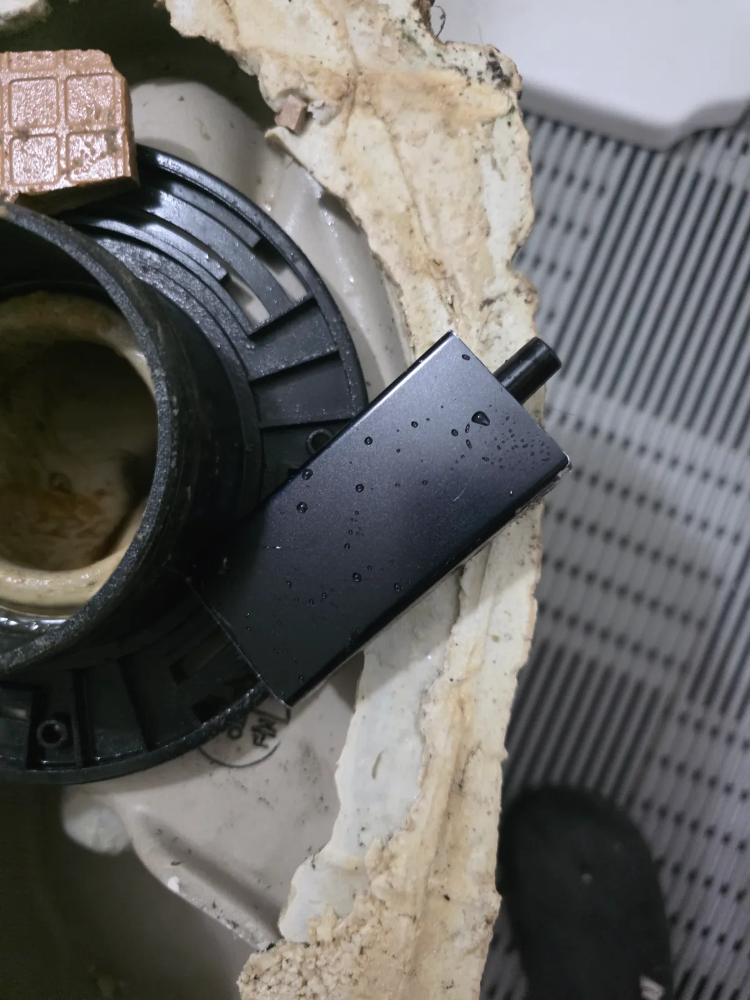

강동구 길동 변기막힘, 탈거 후 에어건으로 전자담배 제거
강동구 길동에서 물이 내려가지 않던 변기를 탈거하고 에어건으로 내부 트랩에 걸린 전자담배를 제거해 정상 배수를 복구했습니다.
서울 · 강동구 · 변기막힘
강동구에서 실제로 해결한 변기막힘 사례를 바탕으로 변기뚫는업체를 찾을 때 확인할 증상과 작업 방법을 정리했습니다. 물이 천천히 내려가거나 수위가 차오르는 막힘, 물이 안 내려가는 증상, 이물질 막힘, 반복 막힘, 변기 역류 등은 원인이 서로 다를 수 있어 현장 진단 후 필요한 범위를 안내합니다.
물이 천천히 내려가거나 수위가 차오르는 막힘, 물이 안 내려가는 증상, 이물질 막힘, 반복 막힘, 변기 역류처럼 비슷해 보이는 증상도 원인 구간은 다를 수 있습니다. 신라건축설비는 실제 출동 기록을 기준으로 증상·원인·사용 장비·작업 결과를 공개합니다.
주요 점검·작업: 석션·에어건·내시경 점검·변기 탈거와 오수관 확인
변기막힘·변기뚫는업체 전체 서비스와 지역별 사례 보기 →